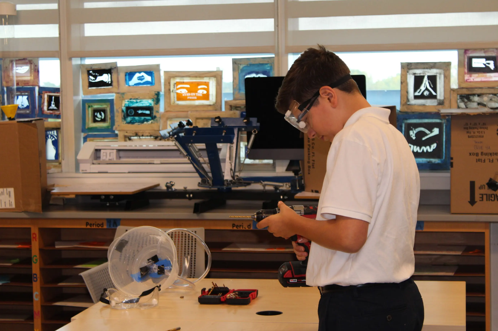
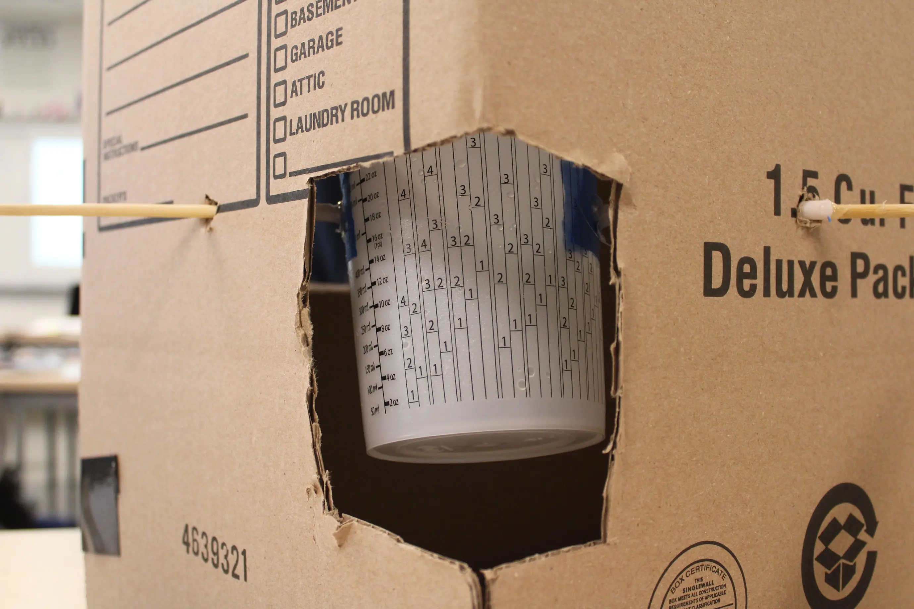

In my 9th grade New Media and Tech class we studied something called the “Mystery Black Box”. This box has a mystery set up inside it that we can't see. Water goes in through a funnel at the top and exits from a tube to a bin from the bottom. Where the water goes during its time inside the box we don't know. We wanted to figure out what was in the box based on testing the actual box to our own ideas to find matching data.
There is not enough evidence to show if our design of a tipping mechanism is or is not inside the black box.
In our observations of the original black box, we noticed that the results were not consistent. During testing we noticed that at times all the water poured in would exit. For example in trial 8 when 1000ml was poured in and 1000ml came out. However at other times all the water poured in would not exit. For example in trial 5, 1000ml was poured in and only 370ml came out. This is showing how there must be a contraption inside that takes a certain amount of water to tip. The key structure in our model was a tipping bucket feature, that required a certain amount of water to tip. We built our model by cutting containers to create an area to be poured. We then used chopsticks as skewers to hold up our container, allowing for tipping. We tested our model by pouring the same amount of water into the original and our model, and noticed the data. However our data was inconclusive, as we only tested once before the model fell apart. The one test we did had 1000ml go in and 1000ml came out.
Models are real builds of an idea or sketch, primarily used for collecting data. Models can allow for people to see what works and doesn't work, allowing for revisions and improvements on a model. Models should be slightly simplified to allow for changes and improvements to be made. Models can also not be physical. It can be digital, a drawing, or many other things. The idea of models being simplified can be good and bad. With a simpler model the data could be slightly different than your real project. However it allows for more leniency and improvements on data. My claim states that there is not enough evidence to conclude whether a tipping mechanism is or is not inside the box. The trials run don't show conclusive data, meaning that we can't make a guess off of it. An alternative claim would be that there is definitely a tipping mechanism in the box. For this to be true, tests would have to have similar data to the original box. This was not observed as an outcome; this means our actual claim still stands.
During this process we used photography, 2D animation, and 3D animation. During the photography step, we used the rule of thirds as well as framing and angles to take enticing shots of our process. We took pictures of all the steps of the projects, planning, modeling, testing, analyzing, and other steps. We also used 2D animation to create our original sketches online. We used Adobe Photoshop to create our animation. This allowed us to add in water, and create a detailed version of our paper sketches. We did this by using the drawing pads to create our components. We then added in water and animation to create a cohesive model, that we could then base our prototype off of. One other skill we used was 3D animation in MAYA. We used this to create a 3D representation of our built project. We used rigging and animating to make it realistic and to add a hand. We used things like booleans, multicut, and scale to create our model and make it look realistic and clean. We used different cameras and lighting to make our models look “pretty” once it's rendered fully. I adjusted the color and texture of the funnels, tubes, and the box. I made the tubes more transparent to create the tube effect. The funnels got their color changed to create them to stand out as a key feature.


During this project I used problem solving and critical thinking skills. These were used to create our design, find potential errors, and work to fix it. We had to use critical thinking to think about what is or is not inside the box, using logic to eliminate options. I grew these skills when our original design would not create the same results. I had to use problem solving to think about why this happened and how to fix this. We were able to eliminate designs before testing due to our insightful judgment and reasoning.

| Our data | The original data | Trial |
|---|---|---|
| 1000 ml in - 1000 ml out | 1000 ml in - 370 ml out | 5 |
| N/A | 1000 ml in - 1710 ml out | 6 |
| N/A | 1000 ml in - 960 ml out | 7 |
| N/A | 1000 ml in - 1000 ml out | 8 |
| N/A | 1000 ml in - 980 ml out | 9 |
| N/A | 1000 ml out - 990 ml out | 11 |